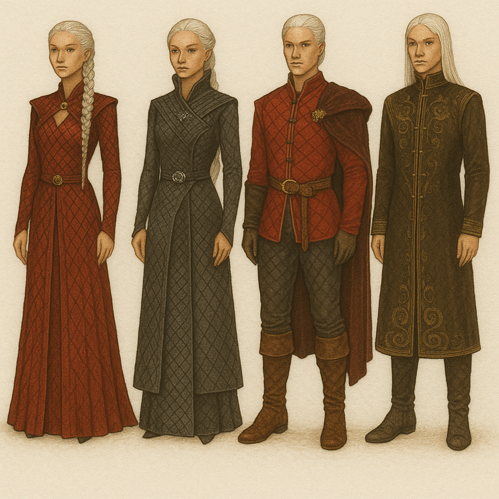
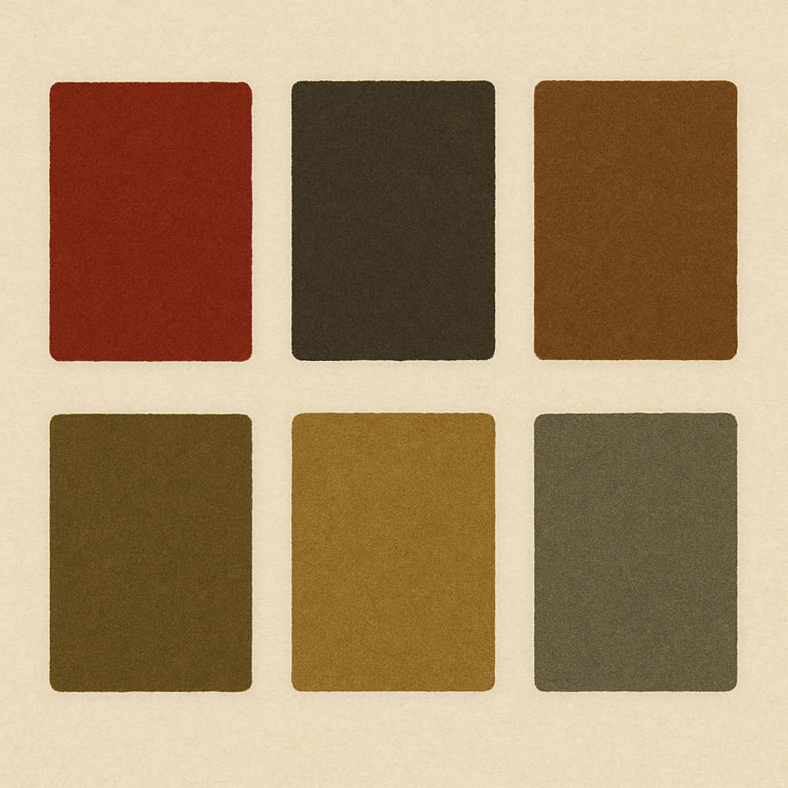

Fire and Blood
A coleção "Fire and Blood" Inspirado no lema imortal da Casa da Targaryen , este moodboard mergulha no universo de poder, legado e destruição. A estética medieval cruza-se com elementos simbólicos como os ovos de dragão, as escamas, o bordado dourado e os tons intensos do vinho e do vermelho sangue. Tudo isto é envolto por uma paleta fria — ecos de Winterfell — e pelo brilho metálico do ferro forjado em espadas, evocando o Trono de Ferro.
Paleta de Cores
- Vermelho queimado intenso
- Verde-musgo muito escuro
- Marrom telha queimado
- Verde-oliva amarelado
- Mostarda terroso
- Cinza-esverdeado frio
Materiais
- Capas longas
- vestidos dramáticos
- ombros estruturados
- Renda floral gótica
- Bordados com brilho opaco (vidrilhos, lantejoulas foscas)
- Aplicações 3D de borboletas
- Flores secas
- Costuras aparentes propositalmente “inacabadas”

